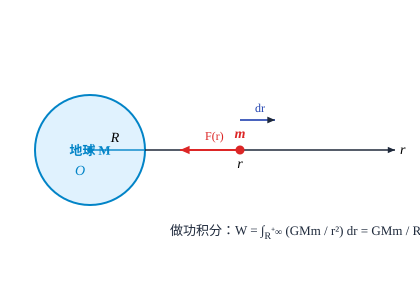
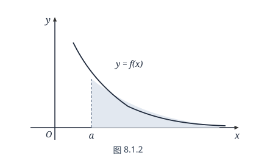
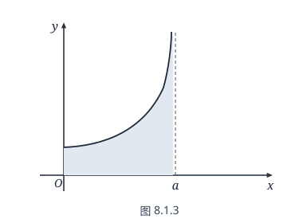
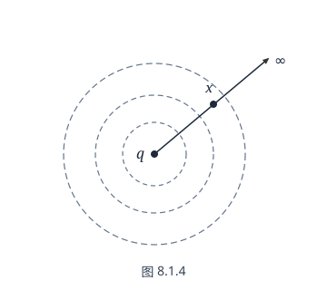
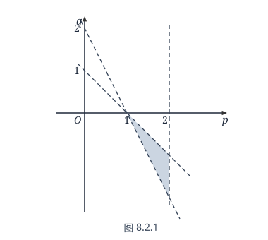

第八章 反常积分
§1 反常积分的概念和计算
反常积分的概念
前面讨论 Riemann 积分时，首先假定了积分区间 $[a, b]$ 有限且被积函数 $f(x)$ 在 $[a, b]$ 上有界，但在实际中经常会碰到不满足这两个条件，却确实需要求积分的情况．所以，我们有必要突破 Riemann 积分的限制条件，考虑积分区间无限或被积函数无界的积分问题，这样的积分称为反常积分（或广义积分），而以前学过的 Riemann 积分相应地称为正常积分（或常义积分）．
先来看下面的一个实际例子．
例 8.1.1
由万有引力定律导出物体脱离地球引力范围的最低初速度即第二宇宙速度．
解 设从地面垂直向上发射的质量为 $m$ 的物体飞出地球引力范围所需的最低初速度为 $v_0$．若它从地球表面飞到无穷远处克服地球引力所做的功为 $W$，则由功能原理，$v_0$ 须满足
$$ \frac{1}{2}mv_0^2 \geqslant W. $$因此，要求出第二宇宙速度，必须先求出物体从地球表面飞到无穷远处克服地球引力所做的功．
以地球质心为原点建立一维坐标，记地球半径 $R$，设物体在 $r$ 处所受到的地球引力为 $F(r)$ ($r \geqslant R$)，则由功的定义和微元法，有
$$ \mathrm{d}W = -F(r)\mathrm{d}r. $$比照 §7.5 中微积分应用实例不难知道，求 $W$ 就是求函数 $-F(r)$ 在无穷区间 $[R, +\infty)$ 上的积分值．沿用前面的记号，我们可以将它形式地写成
$$ W = -\int_R^{+\infty} F(r)\mathrm{d}r. $$为了求出这个积分，我们先考虑物体从地面 ($r = R$) 飞到 $r = x$ ($x > R$) 处克服地球引力所做的功 $W(x)$（如图 8.1.1）：

记 $M$ 为地球的质量，由万有引力定律，有
$$ F(r) = -G\frac{Mm}{r^2} \quad (G \text{ 为引力常量}), $$而在地球表面，地球的引力即为重力，记 $g$ 是重力加速度，有
$$ F(R) = -G\frac{Mm}{R^2} = -mg, $$解得 $G = \dfrac{R^2 g}{M}$，从而
$$ W(x) = R^2 mg \int_R^x \frac{1}{r^2}\mathrm{d}r = R^2 mg \left(-\frac{1}{r}\right)\Bigg|_R^x = Rmg\left(1 - \frac{R}{x}\right). $$显然，$W = \lim_{x \to +\infty} W(x)$，因此
$$ W = -\int_R^{+\infty} F(r)\mathrm{d}r = \lim_{x \to +\infty}\left(-\int_R^x F(r)\mathrm{d}r\right) = \lim_{x \to +\infty} Rmg\left(1 - \frac{R}{x}\right) = Rmg. $$将 $W = Rmg$ 以及 $g = 9.8\,\mathrm{m/s^2}$，地球半径 $R \approx 6371\,\mathrm{km}$ 代入关于 $v_0$ 的不等式，得到
$$ v_0 \geqslant \sqrt{2Rg} \approx \sqrt{2 \times 6371 \times 9.8 \times 10^{-3}} \approx 11.2\,(\mathrm{km/s}). $$这就是第二宇宙速度．
需要求无穷区间上积分的类似例子在实际应用中比比皆是，它有三种形式：
$$ \int_a^{+\infty} f(x)\mathrm{d}x, \quad \int_{-\infty}^b f(x)\mathrm{d}x, \quad \int_{-\infty}^{+\infty} f(x)\mathrm{d}x, $$但是由于形式上有
$$ \int_{-\infty}^b f(x)\mathrm{d}x = \int_{-b}^{+\infty} f(-t)\mathrm{d}t $$及
$$ \int_{-\infty}^{+\infty} f(x)\mathrm{d}x = \int_{-\infty}^c f(x)\mathrm{d}x + \int_c^{+\infty} f(x)\mathrm{d}x, $$因此下面的讨论仅就 $\int_a^{+\infty} f(x)\mathrm{d}x$ 形式来展开．
定义 8.1.1
设函数 $f(x)$ 在 $[a, +\infty)$ 有定义，且在任意有限区间 $[a, A] \subset [a, +\infty)$ 上可积，若极限
$$ \lim_{A \to +\infty} \int_a^A f(x)\mathrm{d}x $$存在，则称反常积分 $\int_a^{+\infty} f(x)\mathrm{d}x$ 收敛（或称 $f(x)$ 在 $[a, +\infty)$ 上可积），其积分值为
$$ \int_a^{+\infty} f(x)\mathrm{d}x = \lim_{A \to +\infty} \int_a^A f(x)\mathrm{d}x; $$否则称反常积分 $\int_a^{+\infty} f(x)\mathrm{d}x$ 发散．
反常积分 $\int_{-\infty}^b f(x)\mathrm{d}x$ 与 $\int_{-\infty}^{+\infty} f(x)\mathrm{d}x$ 可类似地给出敛散性定义（留作习题）．注意只有当 $\int_{-\infty}^c f(x)\mathrm{d}x$ 和 $\int_c^{+\infty} f(x)\mathrm{d}x$ 都收敛时，才认为 $\int_{-\infty}^{+\infty} f(x)\mathrm{d}x$ 是收敛的．
设 $f(x)$ 在 $[a, +\infty)$ 连续，$F(x)$ 是它在 $[a, +\infty)$ 上的一个原函数，由 Newton-Leibniz 公式，
$$ \int_a^A f(x)\mathrm{d}x = F(A) - F(a), $$ $$ \int_a^{+\infty} f(x)\mathrm{d}x = \lim_{A \to +\infty} \int_a^A f(x)\mathrm{d}x = \lim_{A \to +\infty} [F(A) - F(a)], $$因此反常积分 $\int_a^{+\infty} f(x)\mathrm{d}x$ 的敛散性等价于函数极限 $\lim_{A \to +\infty} F(A)$ 的敛散性．当函数 $f(x) \geqslant 0$ 时，反常积分 $\int_a^{+\infty} f(x)\mathrm{d}x$ 收敛的几何意义是曲线 $y = f(x)$ 下方与 $x$ 轴所界定区域的面积（如图 8.1.2）是个有限值．

例 8.1.2
讨论 $\int_1^{+\infty} \frac{1}{x^p}\mathrm{d}x$ 的敛散性 ($p \in \mathbb{R}$)．
解 当 $p \ne 1$ 时，
$$ \int_1^{+\infty} \frac{1}{x^p}\mathrm{d}x = \lim_{A \to +\infty} \int_1^A \frac{1}{x^p}\mathrm{d}x = \lim_{A \to +\infty} \frac{x^{-p+1}}{-p+1}\Bigg|_1^A = \lim_{A \to +\infty} \frac{A^{1-p}-1}{1-p} = \begin{cases} \dfrac{1}{p-1}, & p > 1, \\ +\infty, & p < 1. \end{cases} $$当 $p = 1$ 时，
$$ \int_1^{+\infty} \frac{1}{x}\mathrm{d}x = \lim_{A \to +\infty} \ln x\Bigg|_1^A = \lim_{A \to +\infty} \ln A = +\infty. $$因此，当 $p > 1$ 时，反常积分 $\int_1^{+\infty} \frac{1}{x^p}\mathrm{d}x$ 收敛于 $\dfrac{1}{p-1}$；当 $p \leqslant 1$ 时，反常积分 $\int_1^{+\infty} \frac{1}{x^p}\mathrm{d}x$ 发散．
为了简便，我们一般仿照正常积分的 Newton-Leibniz 公式的表达形式，将反常积分形式地写成
$$ \int_a^{+\infty} f(x)\mathrm{d}x = F(x)\Bigg|_a^{+\infty} = F(+\infty) - F(a), $$读者只要将 $F(+\infty)$ 理解为极限值 $\lim_{x \to +\infty} F(x)$ 就行了．
例 8.1.3
讨论 $\int_0^{+\infty} \mathrm{e}^{-ax}\mathrm{d}x$ 的敛散性 ($a \in \mathbb{R}$)．
解 当 $a \ne 0$ 时，
$$ \int_0^{+\infty} \mathrm{e}^{-ax}\mathrm{d}x = \left(-\frac{1}{a}\mathrm{e}^{-ax}\right)\Bigg|_0^{+\infty} = \begin{cases} \dfrac{1}{a}, & a > 0, \\ +\infty, & a < 0. \end{cases} $$而当 $a = 0$ 时上述积分显然发散至 $+\infty$．因此，当 $a > 0$ 时，$\int_0^{+\infty} \mathrm{e}^{-ax}\mathrm{d}x$ 收敛于 $\dfrac{1}{a}$；当 $a \leqslant 0$ 时，$\int_0^{+\infty} \mathrm{e}^{-ax}\mathrm{d}x$ 发散．
例 8.1.4
计算 $\int_{-\infty}^{+\infty} \frac{1}{1+x^2}\mathrm{d}x$．
解
$$ \int_{-\infty}^{+\infty} \frac{1}{1+x^2}\mathrm{d}x = \int_0^{+\infty} \frac{1}{1+x^2}\mathrm{d}x + \int_{-\infty}^0 \frac{1}{1+x^2}\mathrm{d}x = \arctan x\Bigg|_0^{+\infty} + \arctan x\Bigg|_{-\infty}^0 = \frac{\pi}{2} - 0 + 0 - \left(-\frac{\pi}{2}\right) = \pi. $$在上一章例 7.4.7 求半径为 $a$ 的圆的周长 $l$ 的第一种解法中，我们采用直角坐标系下的显式方程 $y = \sqrt{a^2 - x^2}$，求出了
$$ l = 4a \int_0^a \frac{\mathrm{d}x}{\sqrt{a^2 - x^2}} = 4a \cdot \arcsin \frac{x}{a}\Bigg|_0^a = 2\pi a. $$细心的读者可能会发现，Riemann 积分要求被积函数在积分区间上有界，但是 $\dfrac{1}{\sqrt{a^2 - x^2}}$ 在 $[0, a]$ 上却是无界的（当 $x \to a^-$ 时函数值趋于 $+\infty$，见图 8.1.3）．
事实上，这就是我们在下面要讨论的另一类反常积分——无界函数的积分，只是由于其原函数 $\arcsin \dfrac{x}{a}$ 为大家所熟知，且在 $[0, a]$ 连续，我们按常规将积分上下限代入时没觉察到有什么不妥而已．
如果函数 $f(x)$ 在点 $x_0$ 的任何一个去心邻域上是无界的，则称 $x_0$ 为 $f(x)$ 的奇点．由积分的区间可加性，我们假定 $f(x)$ 在 $[a, b]$ 上只有一个奇点 $x = b$．

定义 8.1.2
设函数 $f(x)$ 在 $x = b$ 的左邻域无界，若对于任意 $\eta \in (0, b-a)$，$f(x)$ 在区间 $[a, b-\eta]$ 上有界可积，且极限
$$ \lim_{\eta \to 0^+} \int_a^{b-\eta} f(x)\mathrm{d}x $$存在，则称反常积分 $\int_a^b f(x)\mathrm{d}x$ 收敛（或称无界函数 $f(x)$ 在 $[a, b]$ 上可积），其积分值为
$$ \int_a^b f(x)\mathrm{d}x = \lim_{\eta \to 0^+} \int_a^{b-\eta} f(x)\mathrm{d}x; $$否则称反常积分 $\int_a^b f(x)\mathrm{d}x$ 发散．
$x = a$ 为奇点和 $x = c \in (a, b)$ 为奇点的情况可以类似定义．当 $x = c$ 为奇点时，注意只有当 $\int_a^c f(x)\mathrm{d}x$ 和 $\int_c^b f(x)\mathrm{d}x$ 都收敛时，才认为 $\int_a^b f(x)\mathrm{d}x$ 是收敛的，且规定
$$ \int_a^b f(x)\mathrm{d}x = \int_a^c f(x)\mathrm{d}x + \int_c^b f(x)\mathrm{d}x. $$例 8.1.5
讨论 $\int_0^1 \frac{1}{x^p}\mathrm{d}x$ 的敛散性 ($p \in \mathbb{R}$)．
解 当 $p \ne 1$ 时，
$$ \int_0^1 \frac{1}{x^p}\mathrm{d}x = \lim_{\eta \to 0^+} \frac{x^{-p+1}}{1-p}\Bigg|_\eta^1 = \lim_{\eta \to 0^+} \frac{1 - \eta^{1-p}}{1-p} = \begin{cases} +\infty, & p > 1, \\ \dfrac{1}{1-p}, & p < 1. \end{cases} $$当 $p = 1$ 时，
$$ \int_0^1 \frac{1}{x^p}\mathrm{d}x = \lim_{\eta \to 0^+} \ln x\Bigg|_\eta^1 = -\lim_{\eta \to 0^+} \ln \eta = +\infty. $$因此，当 $p < 1$ 时，反常积分 $\int_0^1 \frac{1}{x^p}\mathrm{d}x$ 收敛于 $\dfrac{1}{1-p}$；当 $p \geqslant 1$ 时，反常积分 $\int_0^1 \frac{1}{x^p}\mathrm{d}x$ 发散．
例 8.1.2 和例 8.1.5 中的积分一般称为 $p$-积分，对于判别其他反常积分的敛散性具有十分重要的作用．
我们同样可以将无界函数的反常积分形式地写成
$$ \int_a^b f(x)\mathrm{d}x = F(x)\Bigg|_a^b, $$这时它与正常积分的 Newton-Leibniz 公式完全相同，但必须把右端理解为极限过程，即
$$ F(x)\Bigg|_a^b = \lim_{x \to b^-} F(x) - F(a) = F(b-) - F(a). $$例 8.1.6
讨论反常积分 $\int_{-1}^1 \frac{\mathrm{e}^{\frac{1}{x}}}{x^2}\mathrm{d}x$ 的敛散性．
解 $x = 0$ 是被积函数的唯一奇点，但这一点在积分区间的内部，因而我们将积分分解
$$ \int_{-1}^1 \frac{\mathrm{e}^{\frac{1}{x}}}{x^2}\mathrm{d}x = \int_{-1}^0 \frac{\mathrm{e}^{\frac{1}{x}}}{x^2}\mathrm{d}x + \int_0^1 \frac{\mathrm{e}^{\frac{1}{x}}}{x^2}\mathrm{d}x, $$经计算
$$ \int_{-1}^0 \frac{\mathrm{e}^{\frac{1}{x}}}{x^2}\mathrm{d}x = \left(-\mathrm{e}^{\frac{1}{x}}\right)\Bigg|_{-1}^0 = \frac{1}{\mathrm{e}}, \quad \int_0^1 \frac{\mathrm{e}^{\frac{1}{x}}}{x^2}\mathrm{d}x = \left(-\mathrm{e}^{\frac{1}{x}}\right)\Bigg|_0^1 = +\infty, $$所以 $\int_{-1}^1 \frac{\mathrm{e}^{\frac{1}{x}}}{x^2}\mathrm{d}x$ 发散．
容易看出，无穷区间上的反常积分与无界函数的反常积分是可以互相转换的．例如当 $a > 0$ 时
$$ \begin{aligned} \int_a^{+\infty} f(x)\mathrm{d}x &\quad \left(\text{作代换 } x = \frac{1}{t}\right) \\ &= -\int_{\frac{1}{a}}^0 \frac{1}{t^2} f\left(\frac{1}{t}\right)\mathrm{d}t \quad \left(\text{令 } g(t) = \frac{1}{t^2} f\left(\frac{1}{t}\right)\right) \\ &= \int_0^{\frac{1}{a}} g(t)\mathrm{d}t, \end{aligned} $$这就化成了无界函数的反常积分．请读者自行写出反过来的情况．
因此，后面的讨论经常只对一类反常积分进行．
最后我们以无穷区间的反常积分为例，指出反常积分的一个重要特性．
设 $f(x)$ 在 $[a, +\infty)$ 有定义，例 8.1.2 告诉我们，$\lim_{x \to +\infty} f(x) = 0$ 并不能保证 $\int_a^{+\infty} f(x)\mathrm{d}x$ 收敛．
但反过来，若 $\int_a^{+\infty} f(x)\mathrm{d}x$ 收敛，能否保证 $\lim_{x \to +\infty} f(x) = 0$，或者退一步，至少保证 $f(x)$ 在 $[a, +\infty)$ 有界呢？同样不能！
例 8.1.7
设 $f(x)$ 在 $[1, +\infty)$ 按如下方式定义：
$$ f(x) = \begin{cases} n+1, & x \in \left[n, n + \dfrac{1}{n(n+1)^2}\right], \\ 0, & x \in \left(n + \dfrac{1}{n(n+1)^2}, n+1\right), \end{cases} \quad n = 1, 2, \dots. $$那么对于任意 $A > 1$，总可以取自然数 $n$，使得 $A \in [n, n+1)$，由于 $f(x) \geqslant 0$，因此
$$ \int_1^n f(x)\mathrm{d}x \leqslant \int_1^A f(x)\mathrm{d}x \leqslant \int_1^{n+1} f(x)\mathrm{d}x. $$当 $n \to \infty$ 时，
$$ \begin{aligned} \lim_{n \to \infty} \int_1^n f(x)\mathrm{d}x &= \lim_{n \to \infty}\left[ \int_1^2 f(x)\mathrm{d}x + \int_2^3 f(x)\mathrm{d}x + \dots + \int_{n-1}^n f(x)\mathrm{d}x \right] \\ &= \lim_{n \to \infty}\left[ \frac{1}{1 \cdot 2} + \frac{1}{2 \cdot 3} + \frac{1}{3 \cdot 4} + \dots + \frac{1}{(n-1) \cdot n} \right] \\ &= \lim_{n \to \infty}\left[ \left(1 - \frac{1}{2}\right) + \left(\frac{1}{2} - \frac{1}{3}\right) + \left(\frac{1}{3} - \frac{1}{4}\right) + \dots + \left(\frac{1}{n-1} - \frac{1}{n}\right) \right] \\ &= \lim_{n \to \infty}\left(1 - \frac{1}{n}\right) = 1. \end{aligned} $$同理也有
$$ \lim_{n \to \infty} \int_1^{n+1} f(x)\mathrm{d}x = 1. $$由极限的夹逼性
$$ \int_1^{+\infty} f(x)\mathrm{d}x = \lim_{A \to +\infty} \int_1^A f(x)\mathrm{d}x = 1, $$但 $f(x)$ 显然是无界的．
即使 $f(x)$ 在 $[a, +\infty)$ 连续（甚至 $n$ 次可微），也可仿照上例构造出使 $\int_a^{+\infty} f(x)\mathrm{d}x$ 收敛而 $f(x)$ 在 $[a, +\infty)$ 无界的例子（参见 §2 中例 8.2.11 后的讨论）．
反常积分计算
第七章关于定积分的性质，对于反常积分大多相应成立，如线性性质、保序性、区间可加性等；但也有一些性质，如乘积可积性，却不再成立（它们的证明或举例都比较容易，留给读者作为练习）．定积分的一切计算法则，如线性运算、换元积分法、分部积分法等，也都可以平行地用于反常积分．
例 8.1.8
计算 $I_n = \int_0^{+\infty} \mathrm{e}^{-x} x^n\mathrm{d}x$（$n$ 是非负整数）．
解 由例 8.1.3，$I_0 = \int_0^{+\infty} \mathrm{e}^{-x}\mathrm{d}x = 1$．
当 $n \geqslant 1$ 时，利用分部积分
$$ I_n = \int_0^{+\infty} \mathrm{e}^{-x} x^n\mathrm{d}x = \left(-\mathrm{e}^{-x} x^n\right)\Bigg|_0^{+\infty} + n \int_0^{+\infty} \mathrm{e}^{-x} x^{n-1}\mathrm{d}x = n I_{n-1}. $$因此，当 $n \geqslant 1$ 时，
$$ I_n = n! $$例 8.1.9
计算 $\int_0^1 \ln x\mathrm{d}x$．
解 应用分部积分法，注意 $\lim_{x \to 0^+} x\ln x = 0$，
$$ \int_0^1 \ln x\mathrm{d}x = (x\ln x)\Bigg|_0^1 - \int_0^1 \mathrm{d}x = -\int_0^1 \mathrm{d}x = -1. $$本例也可以用换元积分法来做．令 $\ln x = -t$，则 $\ln x\mathrm{d}x = t\mathrm{e}^{-t}\mathrm{d}t$，由例 8.1.8，
$$ \int_0^1 \ln x\mathrm{d}x = \int_{+\infty}^0 t\mathrm{e}^{-t}\mathrm{d}t = -I_1 = -1. $$在例 6.2.18，我们已求出了不定积分 $\int \frac{\mathrm{d}x}{(x^2+a^2)^n}$，现在我们来求 $\frac{1}{(x^2+a^2)^n}$ 在 $[0, +\infty)$ 上的反常积分．
例 8.1.10
计算 $I_n = \int_0^{+\infty} \frac{\mathrm{d}x}{(x^2+a^2)^n}$ ($a > 0$)．
解 与例 6.2.18 类似，对于 $n \geqslant 2$，利用分部积分，就有
$$ \begin{aligned} I_n &= \int_0^{+\infty} \frac{1}{(x^2+a^2)^n}\mathrm{d}x = \frac{1}{a^2}\int_0^{+\infty} \frac{x^2+a^2-x^2}{(x^2+a^2)^n}\mathrm{d}x \\ &= \frac{I_{n-1}}{a^2} + \frac{1}{a^2}\int_0^{+\infty} \frac{-x^2}{(x^2+a^2)^n}\mathrm{d}x = \frac{I_{n-1}}{a^2} + \frac{1}{2a^2(n-1)}\int_0^{+\infty} x\mathrm{d}\left(\frac{1}{(x^2+a^2)^{n-1}}\right) \\ &= \frac{I_{n-1}}{a^2} - \frac{I_{n-1}}{2a^2(n-1)} + \frac{1}{2a^2(n-1)}\left.\frac{x}{(x^2+a^2)^{n-1}}\right|_0^{+\infty} = \frac{1}{a^2}\cdot\frac{2n-3}{2n-2}\cdot I_{n-1}; \end{aligned} $$以此类推，并注意到
$$ I_1 = \int_0^{+\infty} \frac{\mathrm{d}x}{x^2+a^2} = \frac{1}{a}\arctan\frac{x}{a}\Bigg|_0^{+\infty} = \frac{\pi}{2a}, $$即有
$$ \begin{aligned} I_n &= \left(\frac{1}{a^2}\cdot\frac{2n-3}{2n-2}\right) I_{n-1} = \left(\frac{1}{a^2}\cdot\frac{2n-3}{2n-2}\right)\left(\frac{1}{a^2}\cdot\frac{2n-5}{2n-4}\right) I_{n-2} \\ &= \dots = \frac{1}{a^{2n-2}}\cdot\frac{(2n-3)!!}{(2n-2)!!}\cdot I_1 = \frac{\pi}{2a^{2n-1}}\cdot\frac{(2n-3)!!}{(2n-2)!!}. \end{aligned} $$例 8.1.11
计算 $I = \int_0^{\frac{\pi}{2}} \ln\sin x\mathrm{d}x$．
解 作变量代换 $x = 2t$，则
$$ \begin{aligned} I &= \int_0^{\frac{\pi}{2}} \ln\sin x\mathrm{d}x = 2\int_0^{\frac{\pi}{4}} \ln\sin 2t\mathrm{d}t = 2\int_0^{\frac{\pi}{4}} \ln(2\sin t\cos t)\mathrm{d}t \\ &= \frac{\pi}{2}\ln 2 + 2\int_0^{\frac{\pi}{4}} \ln\sin t\mathrm{d}t + 2\int_0^{\frac{\pi}{4}} \ln\cos t\mathrm{d}t. \end{aligned} $$对后一积分作代换 $t = \dfrac{\pi}{2} - u$，则
于是求得
$$ I = -\frac{\pi}{2}\ln 2. $$例 8.1.12
求 $\int_0^{+\infty} \frac{\mathrm{d}x}{(1+x^2)(1+x^\alpha)}$ ($\alpha \in \mathbb{R}$)．
解
$$ \int_0^{+\infty} \frac{\mathrm{d}x}{(1+x^2)(1+x^\alpha)} = \int_0^1 \frac{\mathrm{d}x}{(1+x^2)(1+x^\alpha)} + \int_1^{+\infty} \frac{\mathrm{d}x}{(1+x^2)(1+x^\alpha)}, $$在上式右端的第二个积分中令 $x = \dfrac{1}{t}$，得到
$$ \int_1^{+\infty} \frac{\mathrm{d}x}{(1+x^2)(1+x^\alpha)} = \int_1^0 \frac{-t^\alpha\mathrm{d}t}{(1+t^2)(1+t^\alpha)} = \int_0^1 \frac{x^\alpha\mathrm{d}x}{(1+x^2)(1+x^\alpha)}, $$于是
$$ \begin{aligned} \int_0^{+\infty} \frac{\mathrm{d}x}{(1+x^2)(1+x^\alpha)} &= \int_0^1 \frac{\mathrm{d}x}{(1+x^2)(1+x^\alpha)} + \int_1^{+\infty} \frac{\mathrm{d}x}{(1+x^2)(1+x^\alpha)} \\ &= \int_0^1 \frac{\mathrm{d}x}{(1+x^2)(1+x^\alpha)} + \int_0^1 \frac{x^\alpha\mathrm{d}x}{(1+x^2)(1+x^\alpha)} \\ &= \int_0^1 \frac{\mathrm{d}x}{1+x^2} = \arctan x\Bigg|_0^1 = \frac{\pi}{4}. \end{aligned} $$考察反常积分 $\int_{-\infty}^{+\infty} \sin x\mathrm{d}x$．由定义
$$ \int_{-\infty}^{+\infty} \sin x\mathrm{d}x = -\lim_{A \to +\infty}\cos A + \lim_{A' \to +\infty}\cos A', $$由于这里 $A \to +\infty$ 与 $A' \to -\infty$ 是独立的，因此极限不存在，$\int_{-\infty}^{+\infty} \sin x\mathrm{d}x$ 发散．
如果要求 $A \to +\infty$ 与 $A' \to -\infty$ “同步”进行，即 $A' = -A$，则有
$$ \int_{-\infty}^{+\infty} \sin x\mathrm{d}x = -\lim_{A \to +\infty}[\cos A - \cos(-A)] = 0. $$即 $\int_{-\infty}^{+\infty} \sin x\mathrm{d}x$ 在这么一种意义下是“收敛”的．
定义 8.1.3
若
$$ \lim_{A \to +\infty}\int_{-A}^A f(x)\mathrm{d}x = \lim_{A \to +\infty}[F(A) - F(-A)] $$收敛，则称该极限值为 $\int_{-\infty}^{+\infty} f(x)\mathrm{d}x$ 的 Cauchy 主值，记为 $(\mathrm{cpv})\int_{-\infty}^{+\infty} f(x)\mathrm{d}x$．
当 $\int_{-\infty}^{+\infty} f(x)\mathrm{d}x$ 收敛时，显然有
$$ (\mathrm{cpv})\int_{-\infty}^{+\infty} f(x)\mathrm{d}x = \int_{-\infty}^{+\infty} f(x)\mathrm{d}x; $$而当 $\int_{-\infty}^{+\infty} f(x)\mathrm{d}x$ 发散时，它的 Cauchy 主值也有可能存在，因此 Cauchy 主值推广了反常积分的收敛概念．
无界函数的反常积分也有相应的 Cauchy 主值概念．
例 8.1.13
计算 $\int_{-1}^1 \frac{1}{x}\mathrm{d}x$ 和 $(\mathrm{cpv})\int_{-1}^1 \frac{1}{x}\mathrm{d}x$．
解 $x = 0$ 是它的唯一奇点，将它分解为两部分，
$$ \int_{-1}^1 \frac{1}{x}\mathrm{d}x = \int_{-1}^0 \frac{1}{x}\mathrm{d}x + \int_0^1 \frac{1}{x}\mathrm{d}x = \lim_{\eta' \to 0^-}\int_{-1}^{\eta'} \frac{1}{x}\mathrm{d}x + \lim_{\eta \to 0^+}\int_\eta^1 \frac{1}{x}\mathrm{d}x = \lim_{\eta' \to 0^-}\ln(-\eta') - \lim_{\eta \to 0^+}\ln\eta, $$由 $\eta \to 0^+$ 和 $\eta' \to 0^-$ 的独立性，易知 $\int_{-1}^1 \frac{1}{x}\mathrm{d}x$ 是发散的．
但若取 $\eta' = -\eta$，则有
$$ (\mathrm{cpv})\int_{-1}^1 \frac{1}{x}\mathrm{d}x = \lim_{\eta \to 0^+}[\ln\eta - \ln\eta] = 0. $$以后我们会学到，Cauchy 主值在某些领域中有独到的作用．
对于一些已确认为收敛的反常积分（有些根据问题的实际背景可以断定其收敛，进一步的数学判据将在下一节给出），如果其原函数不能用初等函数来表示，那么除了极少数可以通过某些高超的技巧积出之外，人们还是不得不借助于数值方法来求积分值．
求反常积分值的计算格式首推 Gauss 型求积公式．除了它的计算精度高之外，更重要的原因在于，任何形式的 Gauss 型求积公式都只需用到积分区间的内点，这是它最突出的优点（基于 Newton-Cotes 公式的数值方法毫无例外地需用到端点）．也就是说，对于奇点在端点的无界函数的反常积分，如
$$ \int_{-1}^1 \frac{1}{1+t}\ln\frac{1-t}{2}\mathrm{d}t $$（这是由 $\int_0^1 \frac{\ln(1-x)}{x}\mathrm{d}x$ 通过变换 $x = \dfrac{1+t}{2}$ 得到的，其值为 $-\dfrac{\pi^2}{6} = -1.6449340\dots$），我们可以视其为常义积分而直接套用 Gauss-Legendre 公式，根本无须对 $t = \pm 1$ 加以特殊的“关照”——它们在计算过程中是决不会被用到的．Gauss 型公式的这个性质为编制和调用统一的计算程序带来了极大的方便．
Gauss 型节点 $\{x_i^*\}_{i=0}^n$ 和系数 $a_i^{(n)}$ 可在数学工具书中查到，将它们代入
$$ \int_{-1}^1 f(x)\mathrm{d}x \approx \sum_{i=0}^n a_i^{(n)} f(x_i^*), $$就可以算出积分的近似值了．下表是用不同的 $n$ 计算 $\int_{-1}^1 \frac{1}{1+t}\ln\frac{1-t}{2}\mathrm{d}t$ 的近似值．因无界函数在端点附近变化较剧烈，实际计算时 $n$ 应取得大些（如 20 以上，从编程和上机角度讲，$n = 5$ 和 $n = 50$ 并没有本质差别），方能获得较好效果．
| $n$ | 5 | 8 | 12 | 20 | 48 |
|---|---|---|---|---|---|
| 计算值 | $-1.6242\dots$ | $-1.6362\dots$ | $-1.6408\dots$ | $-1.6434\dots$ | $-1.6446\dots$ |
| 相对误差 | $1.2 \times 10^{-2}$ | $5.2 \times 10^{-3}$ | $2.5 \times 10^{-3}$ | $9.1 \times 10^{-4}$ | $1.6 \times 10^{-4}$ |
无穷区间的反常积分的处理方法大致有三种：
- 取一个足够大的数 $A$，用 $\int_a^A f(x)\mathrm{d}x$ 作为 $\int_a^{+\infty} f(x)\mathrm{d}x$ 的近似值．这时，问题已化成了常义积分，§7.6 中的计算实习题 4 和 5 就相当于做了这样的处理．
- 将 $\int_a^{+\infty} f(x)\mathrm{d}x$ 通过变换 $x = \dfrac{1}{t}$ 化成无界函数在有限区间上的反常积分，再用上述针对无界函数的方法．
- 直接使用 $[0, +\infty)$ 或 $(-\infty, +\infty)$ 上的 Gauss 型求积公式．这部分内容已超出本书的范围，有兴趣的读者可参阅有关数值逼近方面的书籍．
习题 8.1
- 物理学中称电场力将单位正电荷从电场中某点移至无穷远处所做的功为电场在该点处的电位．一个带电量 $+q$ 的点电荷产生的电场对距离 $r$ 处的单位正电荷的电场力为 $F = k\dfrac{q}{r^2}$ ($k$ 为常数)，求距电场中心 $x$ 处的电位（如图 8.1.4）．

图 8.1.4 - 证明：若 $\int_a^{+\infty} f(x)\mathrm{d}x$ 和 $\int_a^{+\infty} g(x)\mathrm{d}x$ 收敛，$k_1$ 和 $k_2$ 为常数，则 $\int_a^{+\infty} [k_1 f(x) + k_2 g(x)]\mathrm{d}x$ 也收敛，且 $$ \int_a^{+\infty} [k_1 f(x) + k_2 g(x)]\mathrm{d}x = k_1 \int_a^{+\infty} f(x)\mathrm{d}x + k_2 \int_a^{+\infty} g(x)\mathrm{d}x. $$
- 计算下列无穷区间上的反常积分（发散也是一种计算结果）：
- $\int_0^{+\infty} \mathrm{e}^{-2x}\sin 5x\mathrm{d}x$；
- $\int_0^{+\infty} \mathrm{e}^{-3x}\cos 2x\mathrm{d}x$；
- $\int_{-\infty}^{+\infty} \dfrac{1}{x^2+x+1}\mathrm{d}x$；
- $\int_0^{+\infty} \dfrac{1}{(x^2+a^2)(x^2+b^2)}\mathrm{d}x$ ($a > 0, b > 0$)；
- $\int_0^{+\infty} x\mathrm{e}^{ax^2}\mathrm{d}x$ ($a \in \mathbb{R}$)；
- $\int_2^{+\infty} \dfrac{1}{x\ln^p x}\mathrm{d}x$ ($p \in \mathbb{R}$)；
- $\int_{-\infty}^{+\infty} \dfrac{1}{(x^2+1)^{3/2}}\mathrm{d}x$；
- $\int_0^{+\infty} \dfrac{1}{(\mathrm{e}^x+\mathrm{e}^{-x})^2}\mathrm{d}x$；
- $\int_0^{+\infty} \dfrac{1}{x^4+1}\mathrm{d}x$；
- $\int_0^{+\infty} \dfrac{\ln x}{1+x^2}\mathrm{d}x$．
- 计算下列无界函数的反常积分（发散也是一种计算结果）：
- $\int_0^1 \dfrac{x}{\sqrt{1-x^2}}\mathrm{d}x$；
- $\int_1^{\mathrm{e}} \dfrac{1}{x\sqrt{1-\ln^2 x}}\mathrm{d}x$；
- $\int_1^2 \dfrac{x}{\sqrt{x-1}}\mathrm{d}x$；
- $\int_0^1 \dfrac{1}{(2-x)\sqrt{1-x}}\mathrm{d}x$；
- $\int_{-1}^1 \dfrac{1}{x^3}\sin\dfrac{1}{x^2}\mathrm{d}x$；
- $\int_0^{\frac{\pi}{2}} \dfrac{1}{\sqrt{\tan x}}\mathrm{d}x$．
- 求极限 $\lim_{n \to \infty}\dfrac{\sqrt[n]{n!}}{n}$．
- 计算下列反常积分：
- $\int_0^{\frac{\pi}{2}} \ln\cos x\mathrm{d}x$；
- $\int_0^\pi x\ln\sin x\mathrm{d}x$；
- $\int_0^{\frac{\pi}{2}} x\cot x\mathrm{d}x$；
- $\int_0^1 \dfrac{\arcsin x}{x}\mathrm{d}x$；
- $\int_0^1 \dfrac{\ln x}{\sqrt{1-x^2}}\mathrm{d}x$．
- 求下列反常积分的 Cauchy 主值：
- $(\mathrm{cpv})\int_{-\infty}^{+\infty} \dfrac{1+x}{1+x^2}\mathrm{d}x$；
- $(\mathrm{cpv})\int_1^4 \dfrac{1}{x-2}\mathrm{d}x$；
- $(\mathrm{cpv})\int_{1/2}^2 \dfrac{1}{x\ln x}\mathrm{d}x$．
- 说明一个无界函数的反常积分可以化为无穷区间的反常积分．
-
- 以 $\int_a^{+\infty} f(x)\mathrm{d}x$ 为例，叙述并证明反常积分的保序性和区间可加性；
- 举例说明，对于反常积分不再成立乘积可积性．
- 证明：当 $a > 0$ 时，只要下式两边的反常积分有意义，就有 $$ \int_0^{+\infty} f\left(\frac{x}{a} + \frac{a}{x}\right)\frac{\ln x}{x}\mathrm{d}x = \ln a \int_0^{+\infty} f\left(\frac{x}{a} + \frac{a}{x}\right)\frac{1}{x}\mathrm{d}x. $$
- 设 $\int_a^{+\infty} f(x)\mathrm{d}x$ 收敛，且 $\lim_{x \to +\infty} f(x) = A$．证明 $A = 0$．
- 设 $f(x)$ 在 $[a, +\infty)$ 上可导，且 $\int_a^{+\infty} f(x)\mathrm{d}x$ 与 $\int_a^{+\infty} f'(x)\mathrm{d}x$ 都收敛，证明 $\lim_{x \to +\infty} f(x) = 0$．
计算实习题
在教师的指导下，试编制一个通用的 Gauss-Legendre 求积公式程序，在电子计算机上实际计算下列反常积分值，并与精确值比较：
- $\int_0^1 \dfrac{\ln(1-x)}{x}\mathrm{d}x$ \quad （精确值 $-\dfrac{\pi^2}{6}$）；
- $\int_0^1 \ln x \ln(1-x)\mathrm{d}x$ \quad （精确值 $2 - \dfrac{\pi^2}{6}$）；
- $\int_0^{\frac{\pi}{2}} \ln\cos x\mathrm{d}x$ \quad （精确值 $-\dfrac{\pi}{2}\ln 2$）；
- $\int_0^{+\infty} \dfrac{\sin x}{x}\mathrm{d}x$ \quad （精确值 $\dfrac{\pi}{2}$）；
- $\int_0^{+\infty} \sin(x^2)\mathrm{d}x$ \quad （精确值 $\dfrac{1}{2}\sqrt{\dfrac{\pi}{2}}$）．
§2 反常积分的收敛判别法
反常积分的 Cauchy 收敛原理
由于一般的被积函数的原函数并不一定是初等函数，而且即使是初等函数，也往往不容易求出，因此有必要建立反常积分敛散性的判别法．事实上，在理论研究和实际应用中，经常会遇到只需要确定一个反常积分的收敛性，而不一定需要求出它的积分值的情况．此外，用数值方法计算反常积分的先决条件是确认其收敛，否则就会得出荒谬的结论——在积分本身发散时，却从数值求积公式得到了一个“收敛”值．
下面以 $\int_a^{+\infty} f(x)\mathrm{d}x$ 为例来探讨反常积分敛散性的判别法．
由于反常积分 $\int_a^{+\infty} f(x)\mathrm{d}x$ 收敛即为极限 $\lim_{A \to +\infty}\int_a^A f(x)\mathrm{d}x$ 存在，因此对其收敛性的最本质的刻画就是极限论中的 Cauchy 收敛原理，它可以表述为如下形式：
定理 8.2.1（Cauchy 收敛原理）
反常积分 $\int_a^{+\infty} f(x)\mathrm{d}x$ 收敛的充分必要条件是：对任意给定的 $\varepsilon > 0$，存在 $A_0 \geqslant a$，使得对任意 $A, A' \geqslant A_0$，有
$$ \left|\int_A^{A'} f(x)\mathrm{d}x\right| < \varepsilon. $$定义 8.2.1
设 $f(x)$ 在任意有限区间 $[a, A] \subset [a, +\infty)$ 上可积，且 $\int_a^{+\infty} |f(x)|\mathrm{d}x$ 收敛，则称 $\int_a^{+\infty} f(x)\mathrm{d}x$ 绝对收敛（或称 $f(x)$ 在 $[a, +\infty)$ 上绝对可积）．
若 $\int_a^{+\infty} f(x)\mathrm{d}x$ 收敛而非绝对收敛，则称 $\int_a^{+\infty} f(x)\mathrm{d}x$ 条件收敛（或称 $f(x)$ 在 $[a, +\infty)$ 上条件可积）．
由 Cauchy 收敛原理，可推出绝对收敛的反常积分一定收敛．
推论
若反常积分 $\int_a^{+\infty} f(x)\mathrm{d}x$ 绝对收敛，则它一定收敛．
证 对任意给定的 $\varepsilon > 0$，由于 $\int_a^{+\infty} |f(x)|\mathrm{d}x$ 收敛，所以存在 $A_0 \geqslant a$，使得对任意 $A, A' \geqslant A_0$，成立
$$ \int_A^{A'} |f(x)|\mathrm{d}x < \varepsilon. $$利用定积分的性质，得到
$$ \left|\int_A^{A'} f(x)\mathrm{d}x\right| \leqslant \int_A^{A'} |f(x)|\mathrm{d}x < \varepsilon, $$由 Cauchy 收敛原理，知 $\int_a^{+\infty} f(x)\mathrm{d}x$ 收敛．
虽然 Cauchy 收敛原理是判别反常积分收敛性的充分必要条件，但是对于具体的反常积分，在使用上往往比较困难，因此需要导出一些便于使用的收敛判别法．
我们先讨论非负函数反常积分的收敛判别法．
非负函数反常积分的收敛判别法
用 Cauchy 收敛原理可以证明下面的比较判别法：
定理 8.2.2（比较判别法）
设在 $[a, +\infty)$ 上恒有 $0 \leqslant f(x) \leqslant K\varphi(x)$，其中 $K$ 是正常数，则
- 当 $\int_a^{+\infty} \varphi(x)\mathrm{d}x$ 收敛时，$\int_a^{+\infty} f(x)\mathrm{d}x$ 也收敛；
- 当 $\int_a^{+\infty} f(x)\mathrm{d}x$ 发散时，$\int_a^{+\infty} \varphi(x)\mathrm{d}x$ 也发散．
例 8.2.1
讨论 $\int_1^{+\infty} \frac{\cos 2x \sin x}{\sqrt{x^3 + a^2}}\mathrm{d}x$ 的敛散性（$a$ 是常数）．
解 因为当 $x \geqslant 1$ 时有
$$ \left|\frac{\cos 2x \sin x}{\sqrt{x^3 + a^2}}\right| \leqslant \frac{1}{x\sqrt{x}}, $$在例 8.1.2 中，已知 $\int_1^{+\infty} \frac{1}{x\sqrt{x}}\mathrm{d}x$ 收敛，由比较判别法，$\int_1^{+\infty} \frac{\cos 2x \sin x}{\sqrt{x^3 + a^2}}\mathrm{d}x$ 绝对收敛，所以 $\int_1^{+\infty} \frac{\cos 2x \sin x}{\sqrt{x^3 + a^2}}\mathrm{d}x$ 收敛．
注意，在以上定理中，条件“在 $[a, +\infty)$ 上恒有 $0 \leqslant f(x) \leqslant K\varphi(x)$”，可以放宽为“存在 $A \geqslant a$，在 $[A, +\infty)$ 上恒有 $0 \leqslant f(x) \leqslant K\varphi(x)$”，请读者想想为什么．
如下形式的比较判别法有时用起来更为方便一些．
推论（比较判别法的极限形式）
设在 $[a, +\infty)$ 上恒有 $f(x) \geqslant 0$ 和 $\varphi(x) \geqslant 0$，且
$$ \lim_{x \to +\infty} \frac{f(x)}{\varphi(x)} = l, $$则
- 若 $0 \leqslant l < +\infty$，则 $\int_a^{+\infty} \varphi(x)\mathrm{d}x$ 收敛时 $\int_a^{+\infty} f(x)\mathrm{d}x$ 也收敛；
- 若 $0 < l \leqslant +\infty$，则 $\int_a^{+\infty} \varphi(x)\mathrm{d}x$ 发散时 $\int_a^{+\infty} f(x)\mathrm{d}x$ 也发散．
所以，当 $0 < l < +\infty$ 时，$\int_a^{+\infty} \varphi(x)\mathrm{d}x$ 和 $\int_a^{+\infty} f(x)\mathrm{d}x$ 同时收敛或同时发散．
证 (1) 若 $\lim_{x \to +\infty}\frac{f(x)}{\varphi(x)} = l < +\infty$，由极限的性质，存在常数 $A$ ($A \geqslant a$)，使得当 $x \geqslant A$ 时成立
$$ \frac{f(x)}{\varphi(x)} < l + 1, $$即
$$ f(x) < (l + 1)\varphi(x). $$于是，由比较判别法，当 $\int_a^{+\infty} \varphi(x)\mathrm{d}x$ 收敛时 $\int_a^{+\infty} f(x)\mathrm{d}x$ 也收敛．
(2) 若 $\lim_{x \to +\infty}\frac{f(x)}{\varphi(x)} = l > 0$，由极限的性质，存在常数 $A$ ($A \geqslant a$)，使得当 $x \geqslant A$ 时成立
$$ \frac{f(x)}{\varphi(x)} > l', $$其中 $0 < l' < l$（当 $l = +\infty$ 时，$l'$ 可取任意正数），即
$$ f(x) > l'\varphi(x). $$于是，由比较判别法，当 $\int_a^{+\infty} \varphi(x)\mathrm{d}x$ 发散时 $\int_a^{+\infty} f(x)\mathrm{d}x$ 也发散．
证毕
例 8.2.2
讨论 $\int_1^{+\infty} \frac{1}{\sqrt[3]{x^4 + 3x^3 + 5x^2 + 2x - 1}}\mathrm{d}x$ 的敛散性．
解 因为
$$ \lim_{x \to +\infty} \frac{\dfrac{1}{\sqrt[3]{x^4}}}{\dfrac{1}{\sqrt[3]{x^4 + 3x^3 + 5x^2 + 2x - 1}}} = 1, $$而 $\int_1^{+\infty} \frac{1}{\sqrt[3]{x^4}}\mathrm{d}x$ 收敛，所以 $\int_1^{+\infty} \frac{1}{\sqrt[3]{x^4 + 3x^3 + 5x^2 + 2x - 1}}\mathrm{d}x$ 收敛．
使用比较判别法，需要有一个敛散性结论明确，同时又形式简单的函数作为比较对象，在上面的例子中我们都是取 $\dfrac{1}{x^p}$ 为比较对象的，因为它们正好能满足这两个条件（这正是 $p$-积分之所以重要的原因）．将定理 8.2.2 中的 $\varphi(x)$ 具体取为 $\dfrac{1}{x^p}$，就得到如下的 Cauchy 判别法：
定理 8.2.3（Cauchy 判别法）
设在 $[a, +\infty) \subset (0, +\infty)$ 上恒有 $f(x) \geqslant 0$，$K$ 是正常数，
- 若 $f(x) \leqslant \dfrac{K}{x^p}$，且 $p > 1$，则 $\int_a^{+\infty} f(x)\mathrm{d}x$ 收敛；
- 若 $f(x) \geqslant \dfrac{K}{x^p}$，且 $p \leqslant 1$，则 $\int_a^{+\infty} f(x)\mathrm{d}x$ 发散．
推论（Cauchy 判别法的极限形式）
设在 $[a, +\infty) \subset (0, +\infty)$ 上恒有 $f(x) \geqslant 0$，且
$$ \lim_{x \to +\infty} x^p f(x) = l, $$则
- 若 $0 \leqslant l < +\infty$，且 $p > 1$，则 $\int_a^{+\infty} f(x)\mathrm{d}x$ 收敛；
- 若 $0 < l \leqslant +\infty$，且 $p \leqslant 1$，则 $\int_a^{+\infty} f(x)\mathrm{d}x$ 发散．
例 8.2.3
讨论 $\int_1^{+\infty} x^\alpha \mathrm{e}^{-x}\mathrm{d}x$ 的敛散性 ($\alpha \in \mathbb{R}$)．
解 因为对任意常数 $\alpha \in \mathbb{R}$，有
$$ \lim_{x \to +\infty} x^2(x^\alpha \mathrm{e}^{-x}) = 0, $$由 Cauchy 判别法的极限形式 (1)，可知 $\int_1^{+\infty} x^\alpha \mathrm{e}^{-x}\mathrm{d}x$ 收敛．
一般函数反常积分的收敛判别法
我们先证明一个重要结果．
定理 8.2.4（积分第二中值定理）
设 $f(x)$ 在 $[a, b]$ 上可积，$g(x)$ 在 $[a, b]$ 上单调，则存在 $\xi \in [a, b]$，使得
$$ \int_a^b f(x)g(x)\mathrm{d}x = g(a)\int_a^\xi f(x)\mathrm{d}x + g(b)\int_\xi^b f(x)\mathrm{d}x. $$证 我们这里只对 $f(x)$ 在 $[a, b]$ 上连续，$g(x)$ 在 $[a, b]$ 上单调且 $g'(x)$ 在 $[a, b]$ 上可积的情况加以证明．
记 $F(x) = \int_a^x f(t)\mathrm{d}t$，则 $F(x)$ 在 $[a, b]$ 连续，且 $F(a) = 0$．由于 $f(x)$ 在 $[a, b]$ 上连续，于是 $F(x)$ 是 $f(x)$ 在 $[a, b]$ 上的一个原函数，利用分部积分法，
$$ \int_a^b f(x)g(x)\mathrm{d}x = F(x)g(x)\Bigg|_a^b - \int_a^b F(x)g'(x)\mathrm{d}x. $$上式右端的第一项
$$ F(x)g(x)\Bigg|_a^b = F(b)g(b) = g(b)\int_a^b f(x)\mathrm{d}x, $$而在第二项中，由于 $g(x)$ 单调，因此 $g'(x)$ 保持定号，由积分第一中值定理，存在 $\xi \in [a, b]$，使得
$$ \int_a^b F(x)g'(x)\mathrm{d}x = F(\xi)\int_a^b g'(x)\mathrm{d}x = [g(b) - g(a)]\int_a^\xi f(x)\mathrm{d}x, $$于是
$$ \begin{aligned} \int_a^b f(x)g(x)\mathrm{d}x &= g(b)\int_a^b f(x)\mathrm{d}x - [g(b) - g(a)]\int_a^\xi f(x)\mathrm{d}x \\ &= g(a)\int_a^\xi f(x)\mathrm{d}x + g(b)\int_\xi^b f(x)\mathrm{d}x. \end{aligned} $$对于一般的可积函数 $f(x)$ 和单调函数 $g(x)$ 的情况，由于证明过程比较复杂，在此从略．
证毕
注 在定理 8.2.4 的假设下，还有如下结论：
- 若 $g(x)$ 在 $[a, b]$ 上单调增加，且 $g(a) \geqslant 0$，则存在 $\xi \in [a, b]$，使得 $$ \int_a^b f(x)g(x)\mathrm{d}x = g(b)\int_\xi^b f(x)\mathrm{d}x; $$
- 若 $g(x)$ 在 $[a, b]$ 上单调减少，且 $g(b) \geqslant 0$，则存在 $\xi \in [a, b]$，使得 $$ \int_a^b f(x)g(x)\mathrm{d}x = g(a)\int_a^\xi f(x)\mathrm{d}x. $$
由积分第二中值定理可以导出下述适用于一般函数反常积分的收敛判别法．
定理 8.2.5
若下列两个条件之一满足，则 $\int_a^{+\infty} f(x)g(x)\mathrm{d}x$ 收敛：
- （Abel 判别法） $\int_a^{+\infty} f(x)\mathrm{d}x$ 收敛，$g(x)$ 在 $[a, +\infty)$ 上单调有界；
- （Dirichlet 判别法） $F(A) = \int_a^A f(x)\mathrm{d}x$ 在 $[a, +\infty)$ 上有界，$g(x)$ 在 $[a, +\infty)$ 上单调且 $\lim_{x \to +\infty} g(x) = 0$．
证 设 $\varepsilon$ 是任意给定的正数．
(1) 若 Abel 判别法条件满足，记 $G$ 是 $|g(x)|$ 在 $[a, +\infty)$ 的一个上界．因为 $\int_a^{+\infty} f(x)\mathrm{d}x$ 收敛，由 Cauchy 收敛原理，存在 $A_0 \geqslant a$，使得对任意 $A, A' \geqslant A_0$，有
$$ \left|\int_A^{A'} f(x)\mathrm{d}x\right| < \frac{\varepsilon}{2G}. $$由积分第二中值定理，
$$ \begin{aligned} \left|\int_A^{A'} f(x)g(x)\mathrm{d}x\right| &\leqslant |g(A)|\cdot\left|\int_A^\xi f(x)\mathrm{d}x\right| + |g(A')|\cdot\left|\int_\xi^{A'} f(x)\mathrm{d}x\right| \\ &\leqslant G\left|\int_A^\xi f(x)\mathrm{d}x\right| + G\left|\int_\xi^{A'} f(x)\mathrm{d}x\right| < \frac{\varepsilon}{2} + \frac{\varepsilon}{2} = \varepsilon. \end{aligned} $$(2) 若 Dirichlet 判别法条件满足，记 $M$ 是 $F(A)$ 在 $[a, +\infty)$ 的一个上界．此时对任意 $A, A' \geqslant a$ 显然有
$$ \left|\int_A^{A'} f(x)\mathrm{d}x\right| < 2M. $$因为 $\lim_{x \to +\infty} g(x) = 0$，所以存在 $A_0 \geqslant a$，当 $x > A_0$ 时，有
$$ |g(x)| < \frac{\varepsilon}{4M}. $$于是，对任意 $A, A' \geqslant A_0$，
$$ \begin{aligned} \left|\int_A^{A'} f(x)g(x)\mathrm{d}x\right| &\leqslant |g(A)|\cdot\left|\int_A^\xi f(x)\mathrm{d}x\right| + |g(A')|\cdot\left|\int_\xi^{A'} f(x)\mathrm{d}x\right| \\ &\leqslant 2M|g(A)| + 2M|g(A')| < \frac{\varepsilon}{2} + \frac{\varepsilon}{2} = \varepsilon. \end{aligned} $$所以无论哪个判别法条件满足，由 Cauchy 收敛原理，都有 $\int_a^{+\infty} f(x)g(x)\mathrm{d}x$ 收敛的结论．
证毕
这两个判别法有时也统称为 A-D 判别法．
例 8.2.4
讨论 $\int_1^{+\infty} \frac{\sin x}{x}\mathrm{d}x$ 的敛散性．
解 $\int_1^A \sin x\mathrm{d}x$ 显然有界，$\dfrac{1}{x}$ 在 $[1, +\infty)$ 上单调且 $\lim_{x \to +\infty}\dfrac{1}{x} = 0$，由 Dirichlet 判别法，
$$ \int_1^{+\infty} \frac{\sin x}{x}\mathrm{d}x \text{ 收敛．} $$但在 $[1, +\infty)$，有
$$ \left|\frac{\sin x}{x}\right| \geqslant \frac{\sin^2 x}{x} = \frac{1}{2x} - \frac{\cos 2x}{2x}, $$因 $\int_1^{+\infty} \frac{\cos 2x}{2x}\mathrm{d}x$ 收敛（仿照上面对 $\int_1^{+\infty} \frac{\sin x}{x}\mathrm{d}x$ 的讨论）而 $\int_1^{+\infty} \frac{1}{2x}\mathrm{d}x$ 发散，所以 $\int_1^{+\infty} \frac{\sin^2 x}{x}\mathrm{d}x$ 发散．再由比较判别法，可知 $\int_1^{+\infty} \left|\frac{\sin x}{x}\right|\mathrm{d}x$ 发散．
因此，$\int_1^{+\infty} \frac{\sin x}{x}\mathrm{d}x$ 条件收敛．
例 8.2.5
讨论 $\int_1^{+\infty} \frac{\sin x \arctan x}{x}\mathrm{d}x$ 的敛散性．
解 由例 8.2.4，$\int_1^{+\infty} \frac{\sin x}{x}\mathrm{d}x$ 收敛，而 $\arctan x$ 在 $[1, +\infty)$ 上单调有界，由 Abel 判别法，
$$ \int_1^{+\infty} \frac{\sin x \arctan x}{x}\mathrm{d}x \text{ 收敛．} $$当 $x \in [\sqrt{3}, +\infty)$ 时，有
$$ \left|\frac{\sin x \arctan x}{x}\right| \geqslant \frac{\pi}{3}\left|\frac{\sin x}{x}\right|, $$由比较判别法和 $\int_1^{+\infty} \left|\frac{\sin x}{x}\right|\mathrm{d}x$ 发散，可知 $\int_1^{+\infty} \frac{\sin x \arctan x}{x}\mathrm{d}x$ 非绝对收敛．
因此，$\int_1^{+\infty} \frac{\sin x \arctan x}{x}\mathrm{d}x$ 条件收敛．
无界函数反常积分的收敛判别法
以上关于无穷区间反常积分的结论都可以平行地用于无界函数的反常积分．对于 $f(x)$ 在 $[a, b]$ 上只有一个奇点 $x = b$ 的情况，我们列出相应结果，证明请读者自己完成．
定理 8.2.1'（Cauchy 收敛原理）
反常积分 $\int_a^b f(x)\mathrm{d}x$ 收敛的充分必要条件是：对任意给定的 $\varepsilon > 0$，存在 $\delta > 0$，使得对任意 $\eta, \eta' \in (0, \delta)$，有
$$ \left|\int_{b-\eta}^{b-\eta'} f(x)\mathrm{d}x\right| < \varepsilon. $$定理 8.2.3'（Cauchy 判别法）
设在 $[a, b)$ 上恒有 $f(x) \geqslant 0$，若当 $x$ 属于 $b$ 的某个左邻域 $[b-\eta_0, b)$ 时，存在正常数 $K$，使得
- $f(x) \leqslant \dfrac{K}{(b-x)^p}$，且 $p < 1$，则 $\int_a^b f(x)\mathrm{d}x$ 收敛；
- $f(x) \geqslant \dfrac{K}{(b-x)^p}$，且 $p \geqslant 1$，则 $\int_a^b f(x)\mathrm{d}x$ 发散．
推论（Cauchy 判别法的极限形式）
设在 $[a, b)$ 上恒有 $f(x) \geqslant 0$，且
$$ \lim_{x \to b^-} (b-x)^p f(x) = l, $$则
- 若 $0 \leqslant l < +\infty$，且 $p < 1$，则 $\int_a^b f(x)\mathrm{d}x$ 收敛；
- 若 $0 < l \leqslant +\infty$，且 $p \geqslant 1$，则 $\int_a^b f(x)\mathrm{d}x$ 发散．
定理 8.2.5'
若下列两个条件之一满足，则 $\int_a^b f(x)g(x)\mathrm{d}x$ 收敛：
- （Abel 判别法） $\int_a^b f(x)\mathrm{d}x$ 收敛，$g(x)$ 在 $[a, b)$ 上单调有界；
- （Dirichlet 判别法） $F(\eta) = \int_a^{b-\eta} f(x)\mathrm{d}x$ 在 $(0, b-a]$ 上有界，$g(x)$ 在 $[a, b)$ 上单调且 $\lim_{x \to b^-} g(x) = 0$．
例 8.2.6
讨论 $\int_0^{1/\mathrm{e}} \frac{\mathrm{d}x}{x^p \ln x}$ 的敛散性 ($p \in \mathbb{R}^+$)．
解 这是个定号的反常积分，$x = 0$ 是它的唯一奇点．
当 $0 < p < 1$ 时，取 $q = \dfrac{1+p}{2} \in (p, 1)$，则
$$ \lim_{x \to 0^+} \frac{x^q}{x^p |\ln x|} = 0, $$由 Cauchy 判别法的极限形式，$\int_0^{1/\mathrm{e}} \frac{\mathrm{d}x}{x^p \ln x}$ 收敛．
类似地，当 $p > 1$ 时，取 $q = \dfrac{1+p}{2} \in (1, p)$，则
$$ \lim_{x \to 0^+} \frac{x^q}{x^p |\ln x|} = +\infty, $$由 Cauchy 判别法的极限形式，$\int_0^{1/\mathrm{e}} \frac{\mathrm{d}x}{x^p \ln x}$ 发散．
当 $p = 1$ 时，可以直接用 Newton-Leibniz 公式得到
$$ \int_0^{1/\mathrm{e}} \frac{\mathrm{d}x}{x\ln x} = \lim_{\eta \to 0^+} \ln|\ln x|\Bigg|_\eta^{1/\mathrm{e}} = -\infty. $$因此，当 $0 < p < 1$ 时，反常积分 $\int_0^{1/\mathrm{e}} \frac{\mathrm{d}x}{x^p \ln x}$ 收敛；当 $p \geqslant 1$ 时，反常积分 $\int_0^{1/\mathrm{e}} \frac{\mathrm{d}x}{x^p \ln x}$ 发散．
需要提醒的是，当 $p \leqslant 0$ 时，由于 $\lim_{x \to 0^+} \frac{1}{x^p \ln x} = 0$，因此 $\int_0^{1/\mathrm{e}} \frac{\mathrm{d}x}{x^p \ln x}$ 是正常积分．请读者在做习题时注意区别这类情形．
例 8.2.7
讨论 $\int_0^1 \frac{1}{x^p}\sin\frac{1}{x}\mathrm{d}x$ 的敛散性 ($p < 2$)．
解 令 $f(x) = \dfrac{1}{x^2}\sin\dfrac{1}{x}$，$g(x) = x^{2-p}$．
对于 $\eta \in (0, 1)$，有
$$ \int_\eta^1 f(x)\mathrm{d}x = \int_\eta^1 \frac{1}{x^2}\sin\frac{1}{x}\mathrm{d}x = -\int_\eta^1 \sin\frac{1}{x}\mathrm{d}\left(\frac{1}{x}\right) = \cos\frac{1}{x}\Bigg|_\eta^1, $$所以 $\int_\eta^1 f(x)\mathrm{d}x$ 有界；而 $g(x)$ 显然在 $(0, 1]$ 单调，且当 $p < 2$ 时，
$$ \lim_{x \to 0^+} g(x) = \lim_{x \to 0^+} x^{2-p} = 0. $$由无界函数反常积分的 Dirichlet 判别法，$\int_0^1 \frac{1}{x^p}\sin\frac{1}{x}\mathrm{d}x$ 收敛．
因为当 $p < 1$ 时，有
$$ \left|\frac{1}{x^p}\sin\frac{1}{x}\right| \leqslant \frac{1}{x^p}, $$由比较判别法，此时 $\int_0^1 \frac{1}{x^p}\sin\frac{1}{x}\mathrm{d}x$ 绝对收敛．而利用例 8.2.4 类似的方法可以得到，当
$1 \leqslant p < 2$ 时，$\int_0^1 \frac{1}{x^p}\sin\frac{1}{x}\mathrm{d}x$ 条件收敛．
事实上，若对 $\int_0^1 \frac{1}{x^p}\sin\frac{1}{x}\mathrm{d}x$ 作变量代换 $x = \dfrac{1}{t}$，就可将它化为
$$ \int_1^{+\infty} \frac{\sin t}{t^{2-p}}\mathrm{d}t, $$利用无穷区间反常积分的 Dirichlet 判别法，可以得到同样的结果．
对两种类型反常积分并存（或多个奇点）的情况，应先将积分区间适当拆分．
例 8.2.8
讨论 $\int_0^{+\infty} \frac{x^{1-p}}{|x-1|^{p+q}}\mathrm{d}x$ 的敛散性 ($p, q \in \mathbb{R}$)．
解 因为 $x = 0$ 和 $x = 1$ 可能是被积函数的奇点，积分区间也无界，所以将其拆成
$$ \int_0^{+\infty} \frac{x^{1-p}}{|x-1|^{p+q}}\mathrm{d}x = \int_0^{\frac{1}{2}} + \int_{\frac{1}{2}}^1 + \int_1^2 + \int_2^{+\infty}. $$要使积分收敛，考虑奇点 $x = 0$，应要求 $p - 1 < 1$；考虑奇点 $x = 1$，应要求 $p + q < 1$；而当 $x \to +\infty$ 时，由于
$$ \frac{x^{1-p}}{|x-1|^{p+q}} \sim \frac{1}{x^{2p+q-1}}, $$由 Cauchy 判别法的极限形式知，当 $2p + q - 1 > 1$ 时积分收敛．
所以，只有当 $p, q$ 同时满足
$$ \begin{cases} p < 2, \\ p + q < 1, \\ 2p + q > 2, \end{cases} $$即 $(p, q)$ 属于图 8.2.1 的阴影区域时，积分 $\int_0^{+\infty} \frac{x^{1-p}}{|x-1|^{p+q}}\mathrm{d}x$ 才收敛．

我们已经知道，即使反常积分 $\int_a^{+\infty} f(x)\mathrm{d}x$ 收敛，在 $f(x)$ 甚至任意次可微的情况下，即使 $f(x)$ 在 $[a, +\infty)$ 上 $n$ 次可微，也不能导出 $f(x)$ 在 $[a, +\infty)$ 有界的结论．作为反常积分 Cauchy 收敛原理的一个应用，下面证明，只要把条件换成“$f(x)$ 一致连续”（注意：这个条件并不比“可微”强，两者是互不包含的），就可以得到比有界更强的结果．
例 8.2.9
设 $\int_a^{+\infty} f(x)\mathrm{d}x$ 收敛，且 $f(x)$ 在 $[a, +\infty)$ 一致连续，则 $\lim_{x \to +\infty} f(x) = 0$．
证 用反证法．
若在所给的条件下，当 $x \to +\infty$ 时 $f(x)$ 不趋于零，则由极限定义，存在 $\varepsilon_0 > 0$，对于任意给定的 $X > a$，存在 $x_0 > X$，使得
$$ |f(x_0)| \geqslant \varepsilon_0. $$又因为 $f(x)$ 在 $[a, +\infty)$ 一致连续，所以对于 $\dfrac{\varepsilon_0}{2} > 0$，存在 $\delta_0 \in (0, 1)$，使得对于任意 $x', x'' > a$，只要 $|x' - x''| < \delta_0$，就有
$$ |f(x') - f(x'')| < \frac{\varepsilon_0}{2}. $$令 $\varepsilon_1 = \dfrac{\varepsilon_0\delta_0}{2} > 0$，对于任意给定的 $A_0 \geqslant a$，取 $X = A_0 + 1$，并设 $x_0 > X$ 满足 $|f(x_0)| \geqslant \varepsilon_0$．不妨设 $f(x_0) > 0$，则对任意满足 $|x - x_0| < \delta_0$ 的 $x$，有
$$ f(x) > f(x_0) - \frac{\varepsilon_0}{2} \geqslant \frac{\varepsilon_0}{2} > 0. $$取 $A$ 和 $A'$ 分别等于 $x_0 - \dfrac{\delta_0}{2}$ 和 $x_0 + \dfrac{\delta_0}{2}$，则 $A' > A > A_0$，且有
$$ \left|\int_A^{A'} f(x)\mathrm{d}x\right| = \left|\int_{x_0-\delta_0}^{x_0+\delta_0} f(x)\mathrm{d}x\right| > \frac{\varepsilon_0}{2}\delta_0 = \varepsilon_1. $$由 Cauchy 收敛原理，$\int_a^{+\infty} f(x)\mathrm{d}x$ 不收敛，与假设条件矛盾．于是 $\lim_{x \to +\infty} f(x) = 0$．
证毕
习题 8.2
-
- 证明比较判别法（定理 8.2.2）；
- 举例说明，当比较判别法的极限形式中 $l = 0$ 或 $+\infty$ 时，$\int_a^{+\infty} \varphi(x)\mathrm{d}x$ 和 $\int_a^{+\infty} f(x)\mathrm{d}x$ 的敛散性可以产生各种不同的情况．
- 证明 Cauchy 判别法及其极限形式（定理 8.2.3 及其推论）．
- 讨论下列非负函数反常积分的敛散性：
- $\int_1^{+\infty} \dfrac{1}{\sqrt{x^3 - \mathrm{e}^{-2x} + \ln x + 1}}\mathrm{d}x$；
- $\int_1^{+\infty} \dfrac{\arctan x}{1+x^3}\mathrm{d}x$；
- $\int_0^{+\infty} \dfrac{1}{1 + x|\sin x|}\mathrm{d}x$；
- $\int_1^{+\infty} \dfrac{x^q}{1+x^p}\mathrm{d}x$ ($p, q \in \mathbb{R}^+$)．
- 证明：对非负函数 $f(x)$，$(\mathrm{cpv})\int_{-\infty}^{+\infty} f(x)\mathrm{d}x$ 收敛与 $\int_{-\infty}^{+\infty} f(x)\mathrm{d}x$ 收敛是等价的．
- 讨论下列反常积分的敛散性（包括绝对收敛、条件收敛和发散，下同）：
- $\int_2^{+\infty} \dfrac{\ln\ln x}{\ln x}\sin x\mathrm{d}x$；
- $\int_1^{+\infty} \dfrac{\sin x}{x^p}\mathrm{d}x$ ($p \in \mathbb{R}^+$)；
- $\int_1^{+\infty} \dfrac{\sin x \arctan x}{x^p}\mathrm{d}x$ ($p \in \mathbb{R}^+$)；
- $\int_0^{+\infty} \sin(x^2)\mathrm{d}x$；
- $\int_a^{+\infty} \dfrac{p_m(x)}{q_n(x)}\sin x\mathrm{d}x$ （$p_m(x)$ 和 $q_n(x)$ 分别是 $m$ 和 $n$ 次多项式，$q_n(x)$ 在 $x \in [a, +\infty)$ 范围无零点）．
- 设 $f(x)$ 在 $[a, b]$ 只有一个奇点 $x = b$，证明定理 8.2.3' 和定理 8.2.5'．
- 讨论下列非负函数反常积分的敛散性：
- $\int_0^1 \dfrac{1}{\sqrt[3]{x^2(1-x)}}\mathrm{d}x$；
- $\int_0^1 \dfrac{\ln x}{x^2-1}\mathrm{d}x$；
- $\int_0^{\frac{\pi}{2}} \dfrac{1}{\cos^2 x \sin^2 x}\mathrm{d}x$；
- $\int_0^{\frac{\pi}{2}} \dfrac{1 - \cos x}{x^p}\mathrm{d}x$；
- $\int_0^1 |\ln x|^p\mathrm{d}x$；
- $\int_0^1 x^{p-1}(1-x)^{q-1}\mathrm{d}x$；
- $\int_0^1 x^{p-1}(1-x)^{q-1}|\ln x|\mathrm{d}x$．
- 讨论下列反常积分的敛散性：
- $\int_0^1 \dfrac{x^{p-1} - x^{q-1}}{\ln x}\mathrm{d}x$ ($p, q \in \mathbb{R}^+$)；
- $\int_0^{+\infty} \dfrac{1}{\sqrt[3]{x(x-1)^2(x-2)}}\mathrm{d}x$；
- $\int_0^{+\infty} \dfrac{\ln(1+x)}{x^p}\mathrm{d}x$；
- $\int_0^{+\infty} \dfrac{\arctan x}{x^p}\mathrm{d}x$；
- $\int_0^{\frac{\pi}{2}} \dfrac{\sqrt{\tan x}}{x^p}\mathrm{d}x$；
- $\int_0^{+\infty} x^{p-1}\mathrm{e}^{-x}\mathrm{d}x$；
- $\int_0^{+\infty} \dfrac{1}{x^p + x^q}\mathrm{d}x$；
- $\int_2^{+\infty} \dfrac{1}{x^p \ln^q x}\mathrm{d}x$．
- 讨论下列反常积分的敛散性：
- $\int_0^{+\infty} \dfrac{x^{p-1}}{1+x^2}\mathrm{d}x$；
- $\int_1^{+\infty} \dfrac{x^q \sin x}{1+x^p}\mathrm{d}x$ ($p \geqslant 0$)；
- $\int_0^{+\infty} \dfrac{\mathrm{e}^{\sin x}\cos x}{x^p}\mathrm{d}x$；
- $\int_0^{+\infty} \dfrac{\mathrm{e}^{\sin x}\sin 2x}{x^p}\mathrm{d}x$；
- $\int_0^1 \dfrac{1}{x^p}\cos\dfrac{1}{x^2}\mathrm{d}x$；
- $\int_1^{+\infty} \dfrac{\sin\left(x + \frac{1}{x}\right)}{x^p}\mathrm{d}x$ ($p > 0$)．
- 证明反常积分 $\int_0^{+\infty} x\sin x^4 \sin x\mathrm{d}x$ 收敛．
- 设 $\int_a^{+\infty} f(x)\mathrm{d}x$ 绝对收敛，且 $\lim_{x \to +\infty} f(x) = 0$，证明 $\int_a^{+\infty} f^2(x)\mathrm{d}x$ 收敛．
- 设 $f(x)$ 单调，且当 $x \to 0^+$ 时 $f(x) \to +\infty$，证明：$\int_0^1 f(x)\mathrm{d}x$ 收敛的必要条件是 $\lim_{x \to 0^+} xf(x) = 0$．
- 设 $\int_a^{+\infty} f(x)\mathrm{d}x$ 收敛，且 $xf(x)$ 在 $[a, +\infty)$ 上单调减少，证明： $$ \lim_{x \to +\infty} x(\ln x)f(x) = 0. $$
- 设 $f(x)$ 单调下降，且 $\lim_{x \to +\infty} f(x) = 0$，证明：若 $f'(x)$ 在 $[0, +\infty)$ 上连续，则反常积分 $$ \int_0^{+\infty} f'(x)\sin^2 x\mathrm{d}x \text{ 收敛．} $$
- 若 $\int_a^{+\infty} f^2(x)\mathrm{d}x$ 收敛，则称 $f(x)$ 在 $[a, +\infty)$ 上平方可积．（类似可定义无界函数在 $[a, b]$ 上平方可积的概念．）
- 对两种反常积分分别探讨 $f(x)$ 平方可积与 $f(x)$ 的反常积分收敛之间的关系；
- 对无穷区间的反常积分，举例说明，平方可积与绝对收敛互不包含；
- 对无界函数的反常积分，证明：平方可积必定绝对收敛，但逆命题不成立．
- 证明反常积分 $$ \int_1^{+\infty} \frac{\sin x}{x^p + \sin x}\mathrm{d}x $$ 当 $p \leqslant \dfrac{1}{2}$ 时发散，当 $\dfrac{1}{2} < p \leqslant 1$ 时条件收敛，当 $p > 1$ 时绝对收敛．